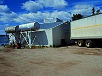
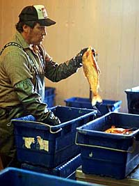
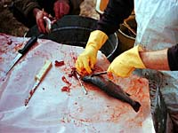
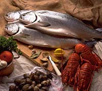

How many days would I work?Fisherman can select season opening dates to allow for a balanced catch. Fall/winter fishing is the most common. Fish are caught and packed on ice, and taken to collection points. Each day harvested fish are brought in to the collection points, the number and species type are recorded. The lake closes for commercial fishing once the quota is reached. This could be one day or two weeks. For example, Canoe Lake may have an average commercial fishery of 2 days and consist of 30-40 fishermen; Reindeer Lake may be up to 2 weeks; Dechambault Lake may be 2 months and southern fisheries such as Last Mountain Lake may be open for 3-4 days. The collection point plant informs the fishermen when the set quota is met. The fishing season may be relatively short, but there are other activities involved in the industry besides fishing. The fisherman must get his product to market. |
What happens to the fish once harvested?Fishermen in the north deliver their catch to any of several packing facilities operated by agents of the FFMC. At the planting plants the fish are separated by species, graded by size and quality, and packed into plastic shipping boxes (blue tubs). The standard weight packed in a tub is 33 kg of fish plus crushed or flake ice. The fisherman is paid for 32 kg, while the additional kilogram is considered an allowance for "shrinkage" or dehydration in transit. There are twelve packing facilities which operate every year, and two or three others which can operate on demand from the fishermen. They may be run by private agents or by fishermen's co-ops themselves. Fish prices at each delivery point are set by FFMC. Agents are paid for fish shipped to Winnipeg and in turn pay the fishermen. FFMC pays an agency allowance of up to $0.31/kg, depending on species, for packing and shipping fish and paying fishermen. Northern fishermen may also sell their catch or a portion of it direct to consumers or to licensed fish processing plants within Saskatchewan. Fish may not be sold outside the province -- by fishermen or fish processors -- without an export license from the FFMC. |
How do I get the produce from the lake to market?Transportation costs are incurred by the fisherman (the producer), in getting his product to market. Some lakes that are very productive in fish are far away from good road access and processing plants which makes them uneconomical to fish commercially.
All are paid by fishermen in some fashion, either directly or indirectly. Transportation rates are usually negotiated by FFMC or by the packing plant operator. These are usually set on a basis of cents per kilogram, any quantity, net weight of fish. The Fresh Fish Marketing Corporation (FFMC) incurrs its own unique costs like the cost of geographic location -- lakeside packing agents to weigh, pack and ship fish, network costs -- shipping containers (blue tubs), and distance to major markets -- shipping costs from Winnipeg to eastern U.S. |
What price will I get for the harvested fish?
Fish are a commodity and are priced according to market forces. At present, all fish for export are purchased by the FFMC and therefore prices are set by the FFMC. The ultimate goal of the FFMC is to sell all of the fish likely to be produced in the most profitable form possible at prices as high as the market will bear. The prices are set in advance of each fishing season and are guaranteed for the duration of the season. FFMC pays profits back to fishermen at the end of the year. In comparison, fisheries that involve independent buyers, prices fluctuate daily depending on the buyer's needs and ability to move fish into the fresh market. Independent buyers have no obligation to buy all fish offered. |
Setting prices paid to fishermen involves several steps: (done by the FFMC)
- 1. Detailed forecasts are prepared.
- 2. Preliminary sales forecasts are prepared, including sales volumes and expected prices for each product and season.
- 3. Plans are made for handling catch, including shipping, processing, storage and sales and estimates of associated costs are calculated.
- 4. Other factors considered: interest charges, cold storage cost, foreign exchange, shipping costs, brokerage fees, advertising, administration, and overhead costs.
- 5. The forecasts are used with a computer model to generate a preliminary financial picture of the upcoming fishing season. Potential problem areas are identified and adjusted.
- 6. The total forecasted revenue available for payments to fishermen for each species is the result of the pricing model. At this point, recommendations are made on the percentage o the value to be paid out in initial prices, with the balance available as final payments. The general guideline is to pay about 80% of the value as initial price, but this can vary depending on circumstances. The pricing model is built on may assumptions. Actual final payments depend on the accuracy of these assumptions.
- 7. Ultimately, the decisions on pricing must be reviewed by the Board of Directors of the FFMC. Once approved by the Board, initial prices are announced.
- 8. Initial prices are different in different fishing seasons because fish sell for higher prices in certain seasons (customarily winter season). Prices are set so the fishermen in each season receive a price that reflects the selling value in that particular season. Also, differences in value due to different size grades or quality (whitefish) are taken into consideration in the initial prices so that final payments can be made on a species pool basis.
- 9. Price lists are prepared for each delivery point. To do this the FOB Winnipeg prices are reduced by the cost of freighting the fish to Winnipeg from the delivery point in question. In Saskatchewan, the prices for five principal species are further reduced by royalties. Saskatchewan has charged fishermen royalties since 1946, when they were first instituted as a whitefish inspection fee. The rates are based on 3% of average prices.
In fish marketing, the greatest profits are available from the sale of fresh, unprocessed fish. The reasons for this are that consumers will pay a higher price for fresh fish than for frozen products, and the handling costs for fresh fish are minimal compared to the costs of processing, freezing and storage.
Prior to 1969 there were several processing plants operating in Saskatchewan, many of them owned by a commercial fisherman's organization, Co-op Fisheries Limited. Since creation of the FFMC in 1969, all processing activities have been centralized to the main FFMC plant in Winnipeg. The last remote processing facility to operate was the FFMC plants in La Ronge, which ceased processing activities after the 1993 season. It is still used as a fresh fish packing plant.
Who will eat my fish?
Commercial fishing is a market driven industry, with the economic viability of producing the different species from the different lakes determined almost solely by price. Freshwater fish from Saskatchewan is not a unique product. The same species are produced from the Great Lakes and other Ontario fisheries and are sold through private buyers. The Great Lakes fisheries are the most direct competition with Saskatchewan fisheries. Consumers will substitute one fish type for another, so Saskatchewan fish are competing against salmon, cod, halibut, depending on product price. Fish must compete against pork, poultry, beef etc. Some species must compete against the farmed species (wild lake trout vs. farmed salmon). Fish is a high priced commodity and is often consumed in restaurants. These two factors make it especially sensitive to economic downturns. Fish sales and prices have decreased over the years.
|
Will you become a commercial fisherman? Check out these last bits of information.....
The success of the commercial fishing season is influenced not only by fish populations but by:
- location of packing plant to deliver fish
- putting up enough ice the winter before (in the case of summertime fishing)
- availability of aircraft (what if there are forest fires?) and the cost of such transportation
- the amount of snow or slush on the ice (too much can make fishing impossible)
- alternative employment available could pay higher wages than fishing
- forest fires in the fishing area (summertime)
- conflict with anglers
- fish quality
- weather conditions
- slower production in winter months